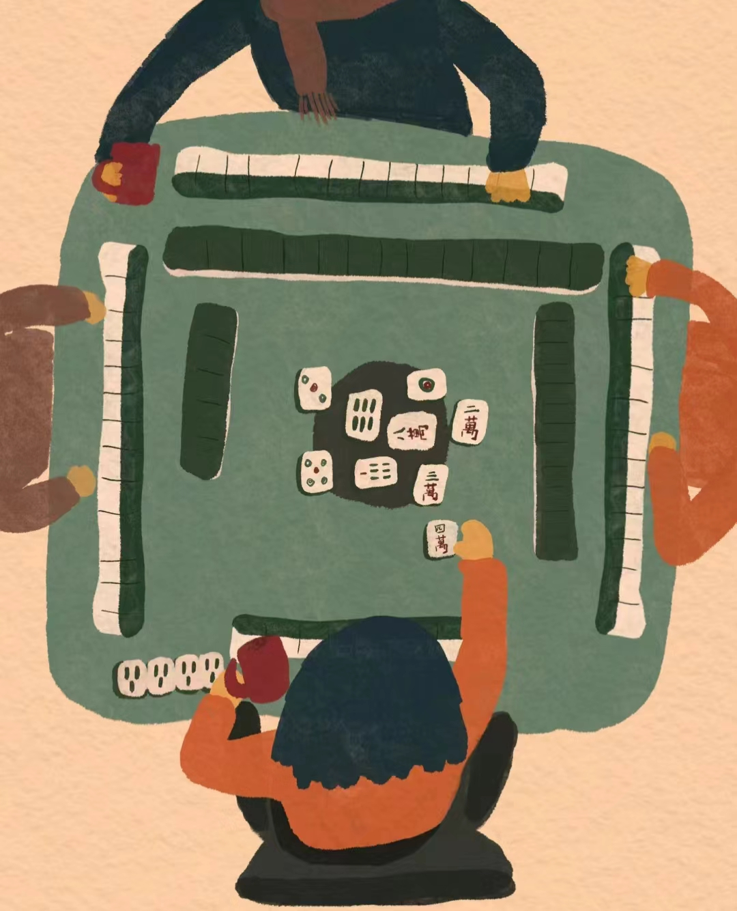
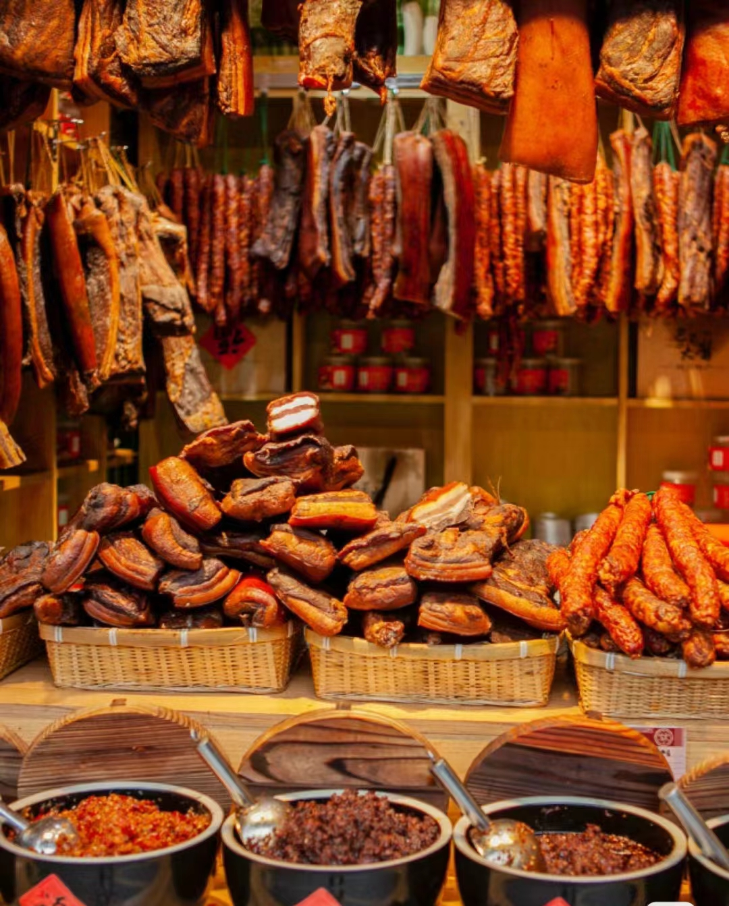
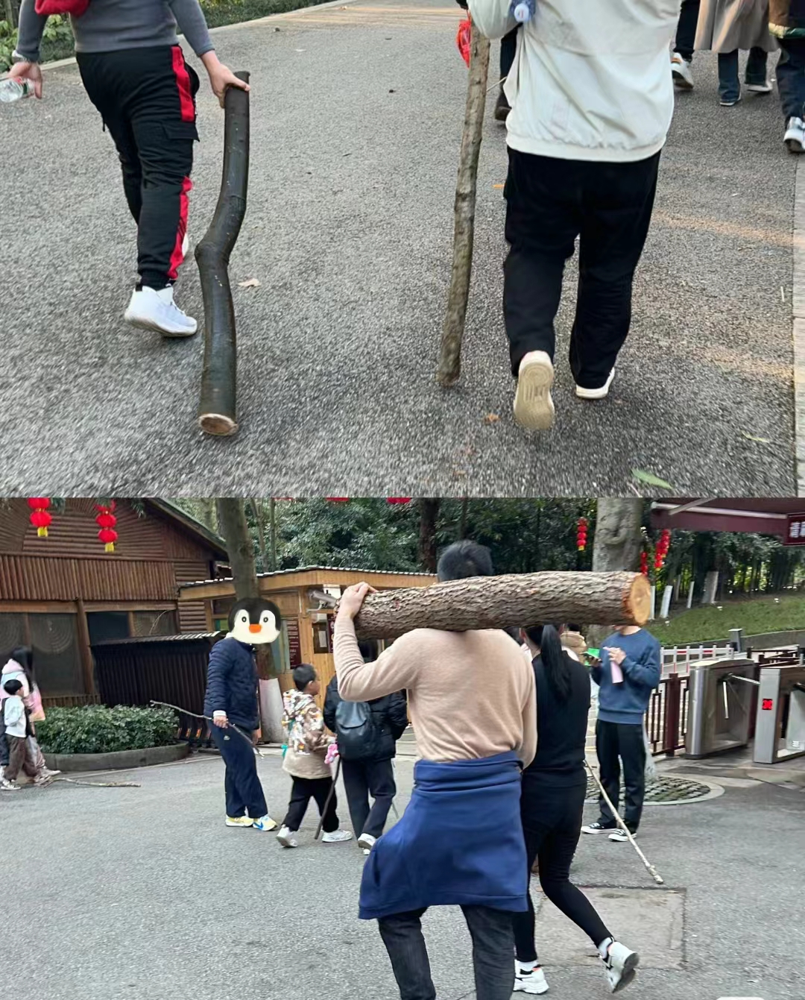

重庆习俗
重庆过年习俗

打麻将
麻将声声贺新春，祝你在新的一年里，牌技更上一层楼，赢牌不断，输局很少。让手中的牌和生活一样丰富多彩，每一张都是胜利的象征。春节愉快，麻将快乐！新春佳节到，麻将桌上乐逍遥。愿你手中的牌永远顺风顺水，生活如麻将般丰富多彩。祝新年快乐，万事如意！麻将桌上风云变，你我共度欢乐年。祝你手气如虹照，赢牌不断笑开颜。

吃腊肉
吉祥如意和幸福美满：在春节期间，家家户户都会悬挂香肠、腊肉，寓意着吉祥如意、幸福美满。这些习俗不仅增加了节日的气氛，也寄托了人们对未来的美好祝愿。腊肉是一种适合家庭聚餐的食物，它可以单独烹饪，也可以与其他食材搭配，制成各种美味的菜肴。在春节期间，无论是远方归来的游子，还是留守在家的长辈，都会围坐在一起，享用腊肉佳肴，共度欢乐时光。因此，腊肉象征着团圆，体现着人们对家庭和亲情的重视和温暖。

捡柴
过年期间，捡柴进屋的习俗源自于民间对“财”和“才”的谐音寓意。在中国的传统文化中，“柴”与“财”和“才”谐音，因此，捡柴被认为能够带来财富和才能。这一习俗不仅是对个人财运和才能的祝愿，也象征着健康和希望。在古代，由于没有现代的取暖设备和电器，柴火是冬季取暖的主要来源，因此，柴火也代表着健康和希望，象征着在寒冷的冬季中，人们能够依靠柴火取暖，保持健康。
让我们一起探索山城重庆吧!